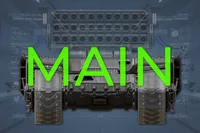
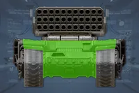
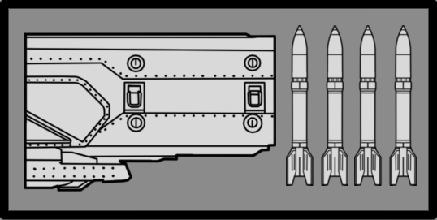
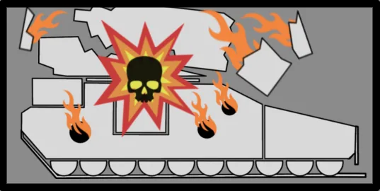

铁幕坦克
铁幕坦克
技术信息
游戏版本
the 铁幕坦克, also known as the 火箭坦克, is a 非常 大  机器人 载具 and 变体 of the Annihilator 坦克 that has its Fusion 战斗 加农炮 replaced with the equally 危险 重型 多个 火箭 Launch 星系 (MRLS).
机器人 载具 and 变体 of the Annihilator 坦克 that has its Fusion 战斗 加农炮 replaced with the equally 危险 重型 多个 火箭 Launch 星系 (MRLS).
生成[编辑 | 编辑 来源]
Barrager Tanks first appear on  自杀任务, having a 几率 to replace Annihilator and Shredder Tanks. They can spawn from 机器人空投, within patrols, guarding 重型 机器人 哨站, Fortresses, and Minor Places of Interest。它们偶尔也会独自在地图上巡逻。
自杀任务, having a 几率 to replace Annihilator and Shredder Tanks. They can spawn from 机器人空投, within patrols, guarding 重型 机器人 哨站, Fortresses, and Minor Places of Interest。它们偶尔也会独自在地图上巡逻。
行为[编辑 | 编辑 来源]
When encountered outside of a 机器人空投, Barrager Tanks can be found still or moving with patrols. Based on where a 绝地潜兵 is when it spots them, Barrager Tanks will 任一 火焰 its 重型 MRLS directly at 绝地潜兵 at 近距离, or point it upwards to 法案 as 大炮 at 中型-远距离. In 两者 射击模式, Barragers will 火焰 a three 火箭 齐射.
Destroying its tracks will render it immobile; however, 绝地潜兵 must 移动 further away from Barrager Tanks to take 优势 of this 陈述. Destroying its 返回 引擎 or 炮塔 will disable the Barrager 坦克, followed by it exploding. Significant amounts of 伤害 will immediately 原因 it to 爆炸.
结构解析[编辑 | 编辑 来源]
| 部件名称 | 生命值1 | 护甲值2 | 耐久2 | 主血量占比3 | Overflow 便帽?4 | 构造5 | 致命? | ExDR6 | |
|---|---|---|---|---|---|---|---|---|---|
| 炮塔 主体 |
2,100 | 100% | - | - | 无 | 是 | 0% | ||
| Launch Tubes |
1,500 | 100% | 150% | 是 | 无 | 是 | 0% | ||
| 船体 主体 |
4,000 |  |
100% | - | - | 无 | 是 | 0% | |
| 船体 正面 |
主体 （车体） |
 |
100% | 100% | 否 | 无 | 是 | 35% | |
| 船体 侧面(2) |
主体 （车体） |
100% | 100% | 否 | 无 | 是 | 35% | ||
| 引擎 海湾 |
1,500 | 100% | 150% | 否 | 无 | 是 | 50% | ||
| 履带(2) | 750 | 80% | 100% | 否 | 无 | 否 | 100% |
Disclaimer: 每个 highlighted 部分 with a 数量 has its own 生命值. Parts without a 数量 分享 生命值 pools.
1) Parts with their HP listed as "Main" do not have their own individual 生命值. 全部 造成伤害 to these parts is transferred to the 敌人's 主生命值 pool.
2) Refer to 护甲 values and 敌人 耐久度 as defined in 伤害 for 更多 information.
3) 造成伤害 to a 部分 will also be transferred in 部分 or in full to 主生命值. If 套装 to 0%, 否 伤害 is transferred.
4) If 套装 to "是", 伤害 transferred 对主血量 is capped by the combined 生命值 and 构造 of the 部分.
5) 构造 acts as a secondary 生命池 that, 一次 Main or 肢体 生命值 has been depleted, 5月 decay. The first 数字 is the 全射 构造 and the second is the 衰退速率. If 套装 to 0/s there is 否 decay and the 构造 behaves as extra 生命值.
6) ExDR means 爆炸 伤害抗性, and can 射程 from 0 to 100%. If 套装 to 100%, the 肢体 cannot take 爆炸伤害; The 爆炸伤害 will instead 目标 Main. Refer to 伤害 for 更多 information.
- Note: This 机械师, known as Affected By 爆炸 can only occur 一次 per 爆炸, regardless of 100% ExDR parts hit, and the 爆炸's 护甲穿透 must 比赛 or exceed 主体护甲 to deal 伤害 对主血量. However, if the same 爆炸 has already damaged Main, this 机械师 will not trigger.
武器配置[编辑 | 编辑 来源]
重型 MLRS (HE)

A 庞大, 33-barrelled 发射器 array. The Barrager 坦克 is loaded with 大 弹道 Rockets, 每个 one capable of atomizing an unsuspecting 绝地潜兵, or sending those that survive indirect hits cartwheeling by violent, concussive blasts.
| 属性 | 数值 | |
|---|---|---|
| 范围效果 | ||
| 2m | ||
| 10米 | ||
| 20米 | ||
| 5/4/5 | ||
| 未知 status (弹道 伤害 Only) (3.0x 伤害 To Bastion) | ||
| 6/5/4/0 | ||
| 60发/分钟 / 1秒（Practical） 3 Rockets per 齐射 8秒（换弹时间） | ||
| ↔[300.00] ↕[200.00] | ||
| 20 (Warhead), 40 (爆炸) | ||
| 50 (Warhead), 40 (爆炸) ( | ||
| 25 (Warhead), 100 (爆炸) | ||
MLRS Housing 爆炸

Given the sheer 之力 of the Barrager 坦克's rockets, it is perhaps 否 惊讶 that, should one of these warheads 引爆 prematurely, the resulting 爆炸 will be a sight to behold.
| 属性 | 数值 | |
|---|---|---|
| 范围效果 | ||
| 0.8米 | ||
| 8m | ||
| 25米 | ||
| 10/9/10 | ||
| 10/0/0/0 | ||
| 20 | ||
| 200 ( | ||
| 500 | ||
战术信息[编辑 | 编辑 来源]
铁幕坦克[编辑 | 编辑 来源]
- The 重型 MRLS 5月 oddly clip through the 坦克's 船体, causing it to 射击 更低 than expected.
- It fires rockets similar as the Reinforced 侦察纵步者, albeit with 更多 than 双重 the 爆炸 半径, capable of posing a 威胁 to 绝地潜兵 even if it misses its 目标.
- 与……相似 迫击炮 Emplacements, 绝地潜兵 should prioritize destroying Barrager Tanks, as their 大炮 模式 can greatly disrupt combat and 减少 困难 掩护's (such as 地形) effectiveness.
- The 炮塔 features 弱 spots at the 正面 and 返回, 每个 with 750 生命值 and
 中型 护甲。
中型 护甲。
- the R-36 Eruptor can 2 射击 the launch tubes.
- the PLAS-45 Epoch can 1 射击 the launch tubes with a fully-charged 螺栓.
- the “飞鹰”机枪扫射 consistently destroys the launch tubes in a 单个 use.
Tanks[编辑 | 编辑 来源]
- 推荐用于摧毁坦克的战略配备有 鹰式空袭, 飞鹰 110mm 火箭巢, 飞鹰 500kg 炸弹, 轨道精准攻击, 轨道炮攻击 or 轨道激光炮.
- The 飞鹰 500kg 炸弹 and 轨道精准攻击 两者 need to be 指挥 hits to 摧毁 the 坦克.
- 单个 G-123 铝热弹 或从……对车体的一发 FAF-14 飞矛, GR-8 无后坐力炮 or GP-20 Ultimatum can 摧毁 the 坦克.
- The 后部 底盘 of a 坦克 is also 易受 武器库 such as the APW-1 反器材步枪 and AC-8 机炮.
- 可以用……摧毁坦克履带使其瘫痪 中型 护甲-穿刺 武器库.
- The 坦克's tracks will do constant 伤害 to a 绝地潜兵 that makes 联络 with it.
- 一次 destroyed, there is a 短 延迟 before the 坦克 explodes, which can deal 伤害 and 击退 绝地潜兵.
- A destroyed 坦克 is a convenient 防御 position that a 绝地潜兵 can briefly utilize.
- 用……降落在坦克上将其摧毁 绝地喷射舱 几乎不会给绝地潜兵逃离爆炸的时间。
琐事[编辑 | 编辑 来源]
- The Barrager 坦克 was first revealed in the Escalation of Freedom 公告 Trailer on 7月 23rd, 2024, and began appearing in-游戏 on the 更新's release on 8月 6th, 2024.
- The Barrager 坦克 is called the "火箭 坦克" in the 更新日志 and promotional 材质 for Escalation of Freedom.
- The Fusion Repeaters on the Barrager's 船体 do not appear to 射击.
- The 弹幕 坦克 appears to 最多 closely resemble the 真实-life Soviet MRL TOS-1 Buratino.
图集[编辑 | 编辑 来源]
- Barrager 坦克 preparing to 火焰 its rockets into the air.
变更历史[编辑 | 编辑 来源]
补丁
描述
1.006.202
2026-04-28
变更
- 已增加 生命值 on 弱点 on 正面 and 返回 from 750 to 1,500
全部 Tanks main 身体 (bottom 部分)
- 主体生命池从3,000提升至4,000
- 背部散热口生命值从750提升至1,500
- 已增加 护甲 on 返回 vents from
 中型 to
中型 to  重型
重型 - 移除 tracks 伤害 zone when the zone is dead
- 已移除 伤害 便帽 to 携带 through from tracks to 主生命值 (so if you overkill it 更多 伤害 goes to 主生命值)
- 已降低 耐久 抗性 on tracks (1.0 to 0.8)
- 减少 overlap 伤害 zones when its driving to 比赛 visuals 更好 and do 更少 伤害
未记录变更
- Launch Tubes 主血量占比 已降低 from 200% to 150%.
1.006.001
2026-02-03
未记录变更
- 已增加 耐久伤害 from 弹道 火箭 冲击 from 30 to 100
1.002.200
2025-03-18
1.002.003
2024-12-18
1.001.104
2024-10-15
变更
- 正面护甲 已降低 from
 坦克 II to
坦克 II to  坦克 I
坦克 I
- Our 上一个 tweak didn't have the intended 效果 on 玩法 that we expected so we’ve reverted this 返回.
- The 后部 弱 spots of the 坦克's 身体 now have their own 生命池, which matches the 坦克's 上一个 全射 生命值. 一次 this 生命池 is depleted, the 坦克 will be destroyed. Additionally, these 弱 spots also deal 150% 伤害 to the 坦克's 主生命值.
- 引擎 is now 750 生命值.
- Barrager 坦克 炮塔
- The 炮塔 is now destroyed if the 坦克 身体 is destroyed
未记录变更
- 坦克 船体 正面 爆炸 伤害抗性 已减少 from 50% to 35%
1.001.100
2024-09-17
1.001.002
2024-08-06
Addition
- 已添加 变体 to the 游戏: Barrager 坦克.
装甲兵 • Brawler • 机械统帅 • 火箭 奇袭者 • 特攻 奇袭者 • Marauder • MG 奇袭者 • 狂暴者 • 蹂躏者 • 火箭 蹂躏者 • 重型 蹂躏者 • 侦察纵步者 • Reinforced 侦察纵步者 • 巨型者 Obliterator • 巨型者 Scorcher • 巨型者 Bruiser • War Strider • Annihilator 坦克 • Shredder 坦克 • Barrager 坦克 • 炮舰 • 运输舰 • 移动工厂